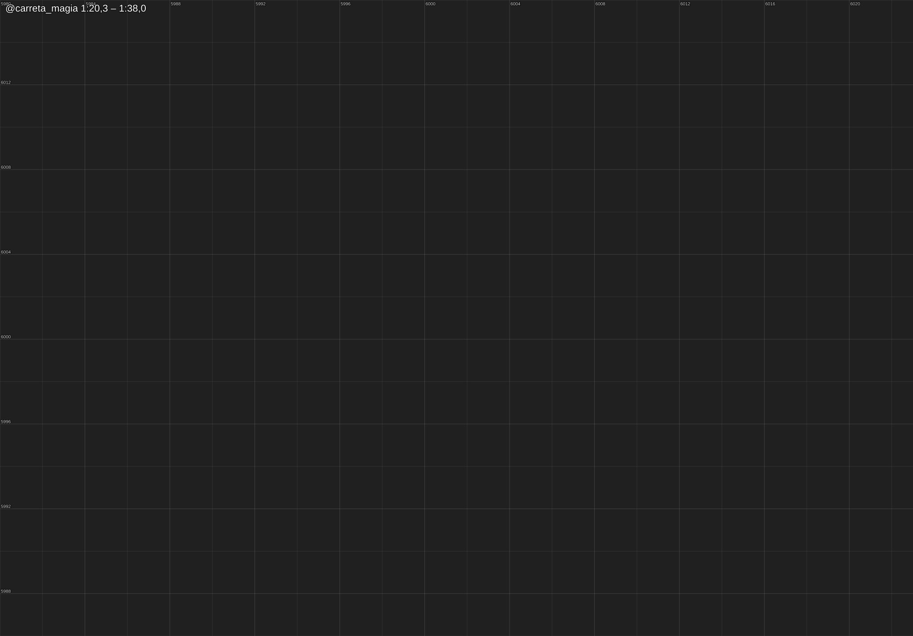
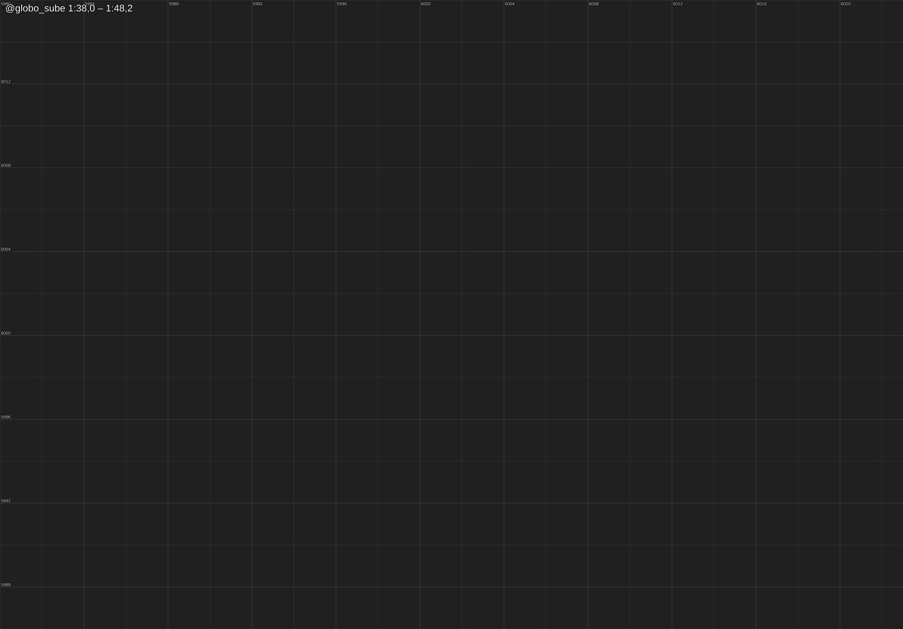
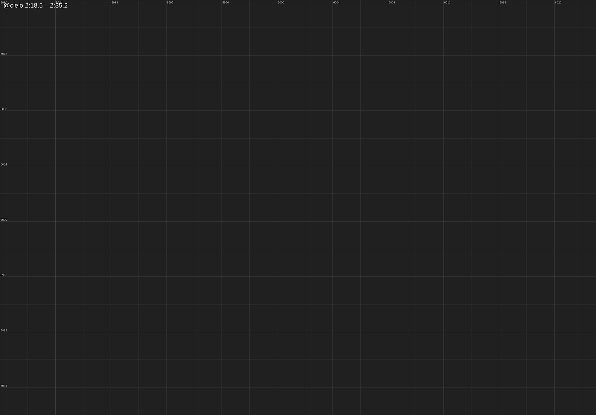

Recorridos · Prologo_UltimaNoche
Cada personaje con su color; un punto cada 2 s (con el segundo cada 10 s); los conos son las cámaras con su número de plano.
1. @inicio · 0:00,0 – 1:03,1
2. @entra · 1:03,1 – 1:20,0
3. @carreta_magia · 1:20,0 – 1:37,7

4. @globo_sube · 1:37,7 – 1:47,9

5. @globo_fin · 1:47,9 – 2:10,8
6. @cielo · 2:10,8 – 2:27,5

7. @evacuar · 2:27,5 – 2:53,9
8. @vamos · 2:53,9 – 3:08,9
9. @duelo · 3:08,9 – 3:31,1
10. @choque · 3:31,1 – 4:28,4
11. @hechizo · 4:28,4 – 4:38,9